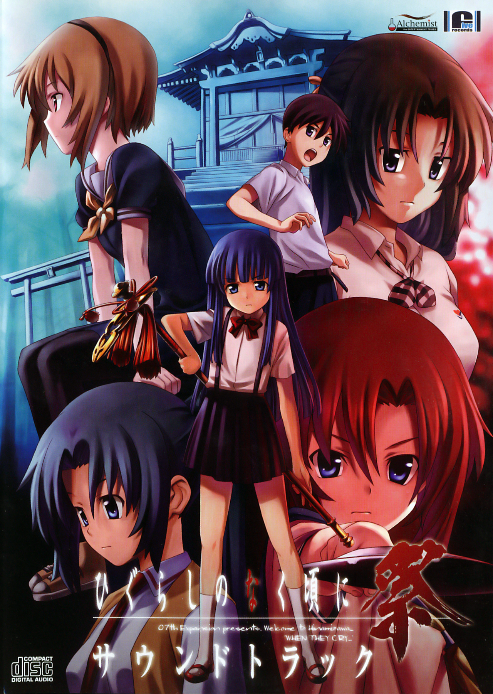

Story
Higurashi no Naku Koro ni takes place during June 1983, at a fictional rural village called Hinamizawa, which has a population of approximately 2000. The main character, Keiichi Maebara, moves to Hinamizawa and befriends his new classmates Rena Ryugu, Mion Sonozaki, Rika Furude, and Satoko Hojo. Keiichi joins their after-school club activities, which consist mostly of card and board games (and punishment games for the loser, usually him.) Hinamizawa appears to be a normal, peaceful, rural village to Keiichi. However, the tranquility abruptly ends after the annual Watanagashi Festival, a celebration to commemorate and give thanks to the local god, Oyashiro-sama. Keiichi learns that every year for the past four years, one person has been murdered and another has gone missing on the day of the Watanagashi Festival. Keiichi himself soon becomes drawn into the strange events surrounding the Watanagashi Festival and Oyashiro-sama. In each story arc, he or one of his friends become paranoid, and a crime is committed. Usually, the crime involves the murder of one of their own friends. While it seems impossible to tell their delusions apart from the mystery of Hinamizawa, slowly the truth is revealed.
[from VNDB]
Information

[from VNDB]
Steam


Higurashi no Naku Koro ni
Higurashi no Naku Koro ni takes place during June 1983, at a fictional rural village called Hinamizawa, which has a population of approximately 2000. The main character, Keiichi Maebara, moves to Hinamizawa and befriends his new classmates Rena Ryugu, Mion Sonozaki, Rika Furude, and Satoko Hojo. Keiichi joins their after-school club activities, which consist mostly of card and board games (and punishment games for the loser, usually him.) Hinamizawa appears to be a normal, peaceful, rural village to Keiichi. However, the tranquility abruptly ends after the annual Watanagashi Festival, a celebration to commemorate and give thanks to the local god, Oyashiro-sama. Keiichi learns that every year for the past four years, one person has been murdered and another has gone missing on the day of the Watanagashi Festival. Keiichi himself soon becomes drawn into the strange events surrounding the Watanagashi Festival and Oyashiro-sama. In each story arc, he or one of his friends become paranoid, and a crime is committed. Usually, the crime involves the murder of one of their own friends. While it seems impossible to tell their delusions apart from the mystery of Hinamizawa, slowly the truth is revealed.
[from VNDB]
Official English Translation: Yes
Length: 30-50 hours
Content: 80's, Group of Friends, Murder Mystery, Slice of Life Comedy, Thriller, Violence
Available at: Steam
Prequel: n/a
Sequel: Higurashi no Naku Koro ni Kai
More Information: VNDB
Steam